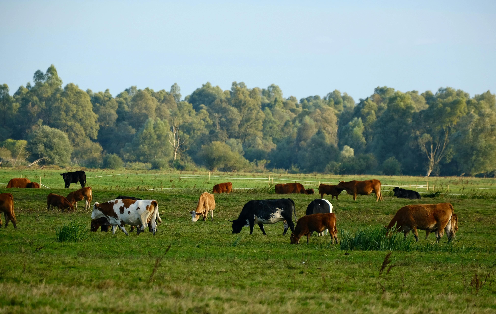

6/6 Funcionalidades
- Establec. · Usuarios · Lotes · Mermas · Costos · Indicadores operativos
- TamboEngineIntegración completa del módulo de inteligencia artificial

Digitalizando el registro diario de producción, mermas y costos sin introducir complejidad técnica innecesaria.
El grupo que contruyo Tambo360.
Digitalizar la gestión sin pedirle al tambero que se convierta en un experto en software.
La planta productiva es física y en movimiento constante.
Sin pasos innecesarios. Registro en pocos pasos.
Interacción táctil, sesiones cortas y frecuentes.
La información clave visible desde primer instante.
Interacción ágil para resolver tareas rápidamente.
Sin decoración innecesaria, enfocado a la tarea.
Baja alfabetización digital.
Explicaciones claras, sin tecnicismos.
Produccion, mermas, costos.
El sistema funciona incluso con registros parciales.
Coordinar al equipo, definir el backlog, asignar tareas, organizar y liderar las reuniones daily y garantizar el cumplimiento de hitos.
Investigar usuarios, diseñar arquitectura de la información, flujos de usuario, wireframes y entregar pantallas funcionales.
Desarrolla la lógica principal del sistema. Se encarga de validar datos, aplicar reglas de negocio, manejar la base de datos y conectar el sistema con otros servicios como el módulo de IA. Es el núcleo del sistema.
Desarrolla la interfaz que ve el usuario en el navegador. Muestra la información y permite cargar datos, comunicándose con el backend mediante una API.
Redactar casos de prueba detallados, testear funcionalidad, usabilidad, reportar bugs, validar correcciones y garantizar calidad.
Tambo360 es una solución construida a partir de las necesidades reales del sector y del trabajo interdisciplinario del equipo.